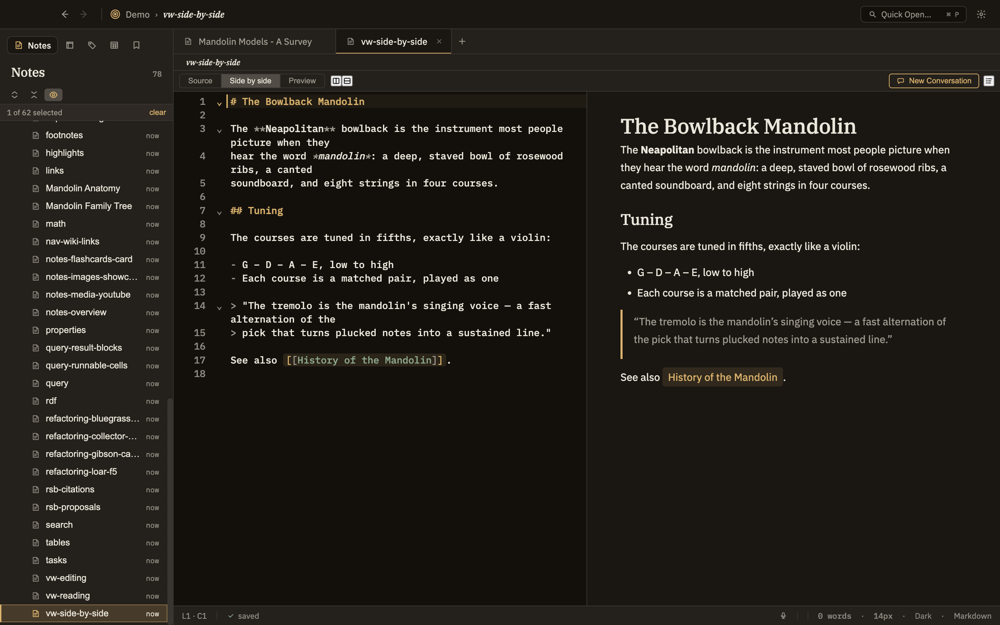

Docs/Viewing options/View modes
View modes
You can look at a note three ways: as the plain text you type, as the finished, formatted page, or with both side by side. Each pane sets its own mode, so you can be editing one note while reading another in the same window. Switching modes never changes your note — it's just a different way to look at the same content.
The three modes
The mode belongs to the pane, not the note. Reopen a note later and it appears in whatever mode that pane was last set to.
Source
The plain text you type, ready to edit. This is where you'll want to be for hands-on work: fixing a link, adjusting a note's properties, or writing inside a cell.
Preview
The finished, read-only page, with everything formatted the way it will look — headings, callouts, math, diagrams, charts, and embedded media all shown live.
Side by side
Your text on the left and the formatted page on the right, in the same pane, so you can write and see the result at once.
A plain-text file has nothing to format, so it only shows Source — the toggle doesn't appear.

Switching modes
There are two ways to change a pane's mode:
Toolbar buttons
Three buttons above the note — Source, Side by side, Preview — jump straight to that mode from wherever you are, so you can go from editing to the finished page in one click.
Cycle shortcut — ⌘⇧P
Steps the active pane through the three modes in order: Source → Preview → Side by side → Source. The same command is in the View menu as Cycle Preview Mode.